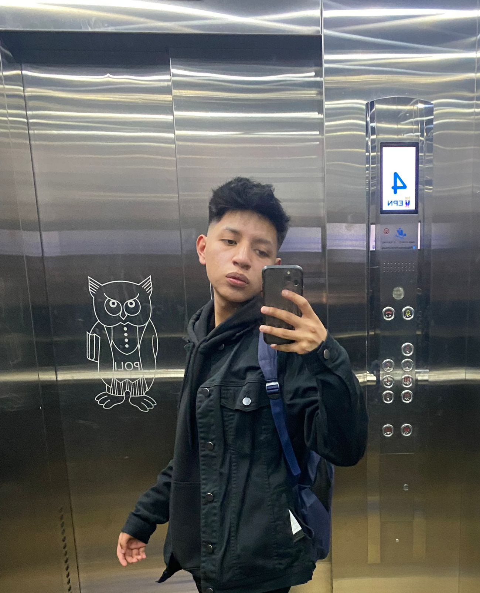

Danny Javier Caiza Oña
Fecha de nacimiento: 01 de septiembre de 2004
Libros Leídos
- La Odisea
- Palalmas
- El Libro Egipcio de los Muertos
- Esas cosas que nos pesan
Habilidades Blandas
- Actitud positiva
- Creativo
- Manejo de tensiones y estrés
- Empático
Idiomas
- Español (nativo)
- Inglés (intermedio)
Habilidades Técnicas
-
JavaScript: Conocimiento avanzado en el lenguaje y programación
orientada a objetos
Deportes que practica
- Básquetbol
- Atletismo (ocasionalmente)
- ¿Comer cuenta como deporte?
Hobbies
- Escuchar música
-
Leer datos de medicina (sáquenme de computación y métanme en
medicina, por fa)
- Limpiar la casa (si cuenta)
Películas Favoritas
- No se aceptan devoluciones
- Toda una vida en un año
- Avengers: Endgame
- Deadpool
Certificaciones
-
Certificación en Conceptos Básicos de Hardware de Computadora –
Cisco Networking Academy – Enero 2025
- Certificación Scrum Foundation – CertiProf – Mayo 2025